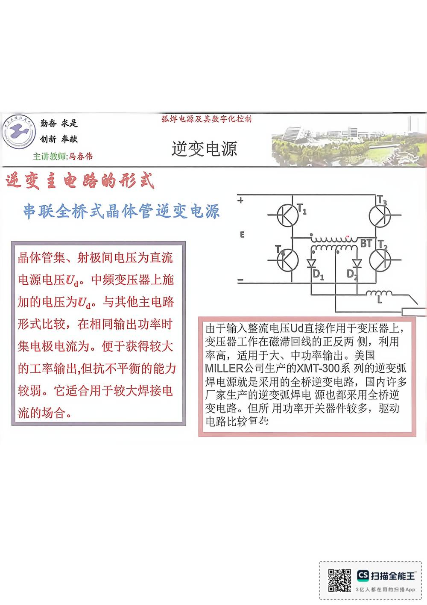

13 手写笔记/6~8周/h-w2-051 串联全桥式晶体管逆变电源
h-w2-051 串联全桥式晶体管逆变电源
📷 原图：
6~8周 焊接电源(差最后一节课)(1).pdf第 51 页（整页扫描，本库内嵌h-w2-051.jpg）
串联全桥式晶体管逆变电源

本页文字（OCR 整理）
- 逆变主电路尚形式
- 串联全桥式晶体管逆变电源
- 晶体管集、射极间电压为直流
- 电源电压U。中频变压器上施
- 加的电压为Ua。与其他主电路
- 形式比较，在相同输出功率时
- 集电极电流为。便于获得较大
- 的工率输出，但抗不平衡钓能力
- 较弱。它适合用于较大焊接电
- 流场合。
- 由于输入整流电压Ud直接作用于变压器上，
- 变压器工作在磁滯回线正反两侧，利用
- 率高，适用于大、中功率输出。美国
- MILLER公司生产的XMT-300系列的逆变弧
- 焊电源就是采用的全桥逆变电路，国内许多
- 厂家生产逆变弧焊电源也都采用全桥逆
- 变电路。但所用功率开关器件较多，驱动
- 电路比较自杂
本页重点（自动标记：含"定义/特点/要求/结论/公式"等，或与课件原句高度一致）
- 由于输入整流电压Ud直接作用于变压器上，
OCR 说明
文字由 macOS Vision 识别手写体/翻拍页面得到，错字难免（如"弧"误识为"孤"）；重点标记据此推断，请以页图为准。
对应讲义页
关联
- ← 上一页 · 总览 · 下一页 →
- 讲义：00 第1章 绪论 导航 · 概念：04 概念地图